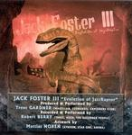

| Artist: | Jack Foster III |
| Title: | Evolution Of Jazzraptor |
| Label: | Musea FGBG 4548 |
| Length(s): | 58 minutes |
| Year(s) of release: | 2004 |
| Month of review: | [07/2004] |
| 1) | Bohemian Soul | 7.27 |
| 2) | Cat's Got Nine | 3.18 |
| 3) | Feel It When I Sting | 6.45 |
| 4) | The Shy Ones | 5.27 |
| 5) | Tiger Bone Wine | 3.37 |
| 6) | Dream With You | 4.44 |
| 7) | Lucifer's Rat | 6.02 |
| 8) | Every Time You Smile | 6.39 |
| 9) | Nirvana In The Notes | 14.07 |
So, what is it? A debut. A varied progressive album. A piece that may take some Magna Carta influences, but just as well that of other American progressives such as Echolyn or Glass Hammer. Foster's voice is near the timbre of a Michael Franks, introducing a sort of relaxed feel, very apparent in The Shy Ones, which is pretty Franks-y anyway with its acoustic guitars. And I mean Franks when he was good, not the crappy later stuff.
Opener Bohemian Soul is a strong progressive track including a small jazzy intermezzo, which due to its briefness stays away from meandering. The guitar lingers, embodying the symphonic influences in the track. Due to its structure and spellbinding feel this is one of the stronger tracks. Cat's Got Nine features a gypsy near country violin stomping boots and twists that sound rather different. Still there is something that makes the track fit in, instead of becoming some kind of bluegrass ditty.
Feel It When I Sting has the bite you would expect. The track is taken on by Foster's voice, supported by the well fitted accompaniement led by guitar and synth which stays just on the right side of tacky. The rocky guitar solo with ghouls (yeah, yeah, I know, a solo is supposed to be solo, but you get my drift) shouting the title climaxes towards the end.
Tiger Bone Wine opens with strong guitars and inhibits some of those weird 10CC voice ("I saw for faces, one mad" kind of stuff). This track is pretty much pop rock. The strong guitar, wicked organ and modern sounding rhythm limit the 10CC influences, but give the track more radio credibility than I would appreciate for the moment.
Dream With You starts off as a ballad, or more introspective song moving slowly, almost dreamily along, to suddenly spring alive with multiple vocals in an almost ELO-like vein, leading to a pretty filled up spectrum.
Lucifer's Rat is pretty similar to a Magellan track: a lot of sound, heavy drums and guitars, speed never letting off. Heavy snowballing stuff. Especially the pushy repeat of the title and the pompy guitar can get irritating. The main difference is that there are some odd voices in there, though. In its most Magellan like moments the material falls behind with most other on the disc though, having too much of a bloated feel.
Every Time You Smile returns that melancholy laid back feel. The guitar both as the vocals do pick up a couple of minutes into the track, but the riff has a nice twist to it, and doesn't dominate. The guitar solo makes this track into an almost regularly structured song. The hefty ending following in the extra time belies this effect, though. Still there is something of a rock ballad in this one. The twists steer it easily away from treaded paths.
Nirvana In The Notes starts out as an etude, before continuing as another slower track, along the way breaching on the piano concerto as well as the jazz pianist. This jazz piano section is a tad on the long side, at least long enough to take the road to meanderville, but luckily Jack returns, ready for a melodic closing featuring strong vocals. Still, this track leans a little too much on the strong closing section.
In a way this album reminds me of the Eyestrings album released earlier this year. Not so much because of the actual sound, but more because both albums are in a very real sense progressive releases, but do move about the vein, bringing in other elements, thus more varied than one would expect. Having said that, I can't help feeling that this album would have been the better for it had Lucifer's Rat been omitted and a couple of minutes been shaved off of Nirvana In The Notes. Strong album the way it is still.